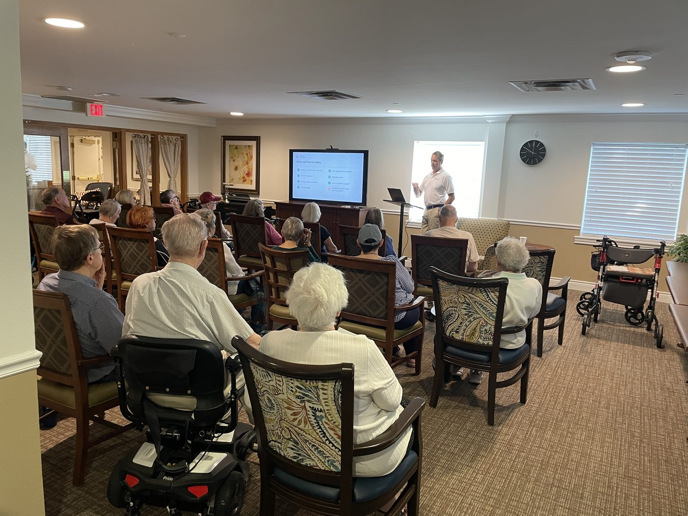

Immediate value for older adults
Participants learn practical skills they can use now, including scam recognition, account protection, communication tools, reminders, and responsible use of AI.
The central campaign recommendation
Free local AI and technology safety sessions help older adults use digital tools with confidence, protect themselves from scams, and experience Benchmark as a trusted community resource.

Campaign premise
Benchmark partners with trusted local organizations to offer practical sessions for older adults and families. The program creates a useful reason to visit, demonstrates Benchmark's commitment to learning and safety, produces local marketing content, and begins a measurable path from event interest to inquiry, tour, and move-in.
Participants learn practical skills they can use now, including scam recognition, account protection, communication tools, reminders, and responsible use of AI.
The program gives families evidence that Benchmark supports a parent's independence while taking digital and financial safety seriously.
Benchmark becomes visible as an organization that contributes locally and helps people before they become prospects.
Each event connects a Benchmark community, a trusted partner, and a town or city across event pages, calendars, social posts, media, and search.
Registration, digital check-in, surveys, and follow-up create consented records that can enter Benchmark's CRM and conversion process.
Consistent surveys allow Benchmark to publish evidence about older adults, AI knowledge, confidence, interests, and safety concerns.
Voice cloning, deepfakes, phishing, impersonation, urgency tactics, and how to verify a request before acting.
Passwords, multifactor authentication, privacy settings, software updates, and safer use of phones and tablets.
Using AI for questions, planning, reminders, writing, and family communication while checking important information.
Photos, video calls, messaging, shared calendars, accessibility features, and tools that support relationships.
What not to share, when to seek human help, how to recognize uncertainty, and how to protect personal information.
Registration and survey responses help each community select future sessions based on demonstrated interest.
Location is the first gate
Community centers, YMCAs, libraries, places of worship, clubs, and municipal programs already have local trust and audience access. Joint promotion gives both partners useful content while strengthening Benchmark's association with the town it serves.
People register through partner outreach, local search, social media, email, community calendars, or Benchmark promotion. The short form captures contact details, location, session, relationship to the prospective resident, and communication consent.
Promotion welcomes walk-ins. At the event, attendees use a QR code, short URL, Benchmark or partner tablet, or staff-assisted form. They provide the same minimum information in approximately one minute.
Partner channels, town pages, media, search, email, and social.
Short digital form creates or confirms the attendee record.
The session delivers useful education and demonstrates Benchmark's role.
Knowledge, interests, confidence, and follow-up preferences are captured.
Resident and adult-child paths collect only the next useful signals.
Structured data supports counselor outreach, tours, attribution, and conversion.
Benchmark as the source
Consistent registration and post-session questions allow Benchmark to measure what older adults know, what concerns them, which tools they use, and what they want to learn next. Results should be aggregated with appropriate consent and privacy controls.
AI familiarity, scam awareness, technology use, confidence before and after training, preferred topics, family concerns, regional patterns, and interest in future resources.
An annual report, local findings, CEO articles, media pitches, infographics, educational resources, conference content, and future programming based on observed needs.
Partner promotion, local traffic, event-page visits, registrations, and walk-ins.
Total attendance, attendance rate, survey completion, and repeat-session interest.
Consent rate, CRM records, senior living inquiries, advisor conversations, and tours.
Event-sourced opportunities, inquiry-to-tour rate, move-ins, attribution, and time to conversion.
Event records can enter the same personalized inquiry, lead-scoring, CRM, and conversion process used for general website visitors.